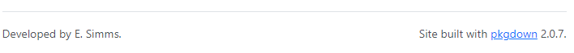
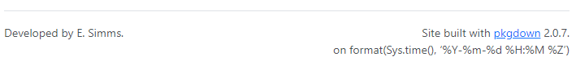
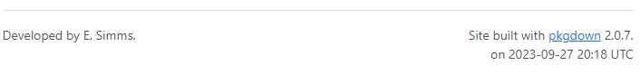

Note: I am hoping there is a much easier way to do this! Please let me know!
The default footer produced with
pkgdown::build_site() looks like this:

… and I would like to also display the date when the site was
last modified:

I expected that pkgdown would have this available, but I have
not been successful in finding anything on this. When it comes to having
dates visible on package-related documentation, I did find this in R Packages: Chapter
17.2 which mentions the yaml for a vignette:
date: we think this usually does more harm than good, since it’s not clear what the date is meant to convey. Is it the last time the vignette source was updated? In that case you’ll have to manage it manually and it’s easy to forget to update it. If you manage date programmatically with Sys.date(), the date reflects when the vignette was built, i.e. when the package bundle was created, which has nothing to do with when the vignette or package was last modified. We’ve decided it’s best to omit the date.
I think it is worthwhile to automatically display the date when
the entire site was last built, and to do so in a manner which makes it
obvious we are talking about the entire package. This is useful
information, which should be readily available, for developers and
users. Once in production, the reason(s) for modification can be
mentioned in the NEWS.md file.
The solution I have found involves the following:
- modifying _pkgdown.yml
- setting the yaml.eval.expr option
- modifying the github workflow
Modifying _pkgdown.yml
According to the pkgdown
documentation, there are three pre-defined components available for
the footer block:
-
developed_by, a sentence describing the main authors of the package -
built_with, a sentence advertising pkgdown -
package, the name of the package.
and the default structure makes use of two of them:
footer:
structure:
left: developed_by
right: built_withUnfortunately, something like build_date is not available.
We can create our own components and these can be text or R expressions. In my _pkgdown.yml, I have defined two components and then specified, in the structure, where I want these components to appear:
footer:
structure:
left: developed_by
right: [built_with, built_text, built_date]
components:
built_date: !expr "format(Sys.time(), '%Y-%m-%d %H:%M %Z')"
built_text: "<br>on "Running pkgdown::build_site() produces the following
footer:

yaml.eval.expr
By default, the ability to run R expressions in the _pkgdown.yml file is turned off. This is done for security reasons because an entire file of R statements could be pulled in and executed.
We can permit the evaluation of the R expression with
options(yaml.eval.expr = TRUE). Running this in the console
and then pkgdown::build_site() results in the date
expression being evaluated:
